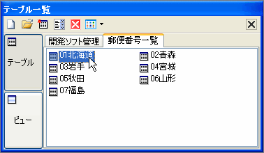

テーブル・ビューを開く

テーブルを開くには![[テーブルを開くアイコン画像]](../image/tbl.gif) テーブルアイコンをWクリックするか
開くアイコンをクリックしてください。
テーブルアイコンをWクリックするか
開くアイコンをクリックしてください。
またテーブルを選択してEnterキーでもテーブルを開くことができます。
これを繰り返せはタブ表示で複数のテーブルを開くことができます。
開くアイコンを使用する場合のみ複数のテーブルを
選択すれば一度に複数のテーブルを開くことが可能です。
ビューボタンをクリックすればそのデータベース内の
ビューの一覧が表示されます。テーブルと同じように開くことが可能です。
ビューは基本的に編集ができませんが、トリガーの設定をすることにより編集を可能にすることができます。